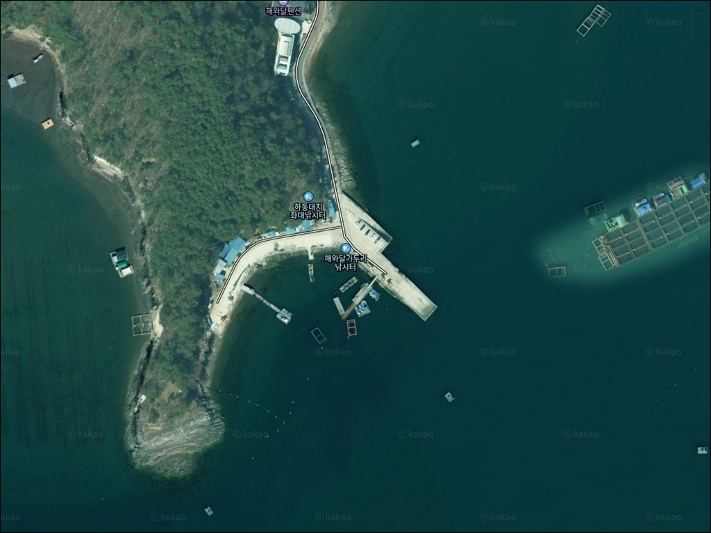
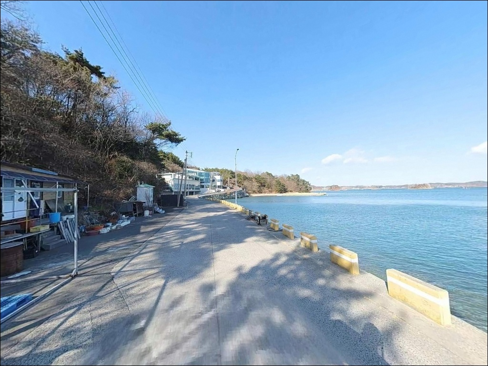
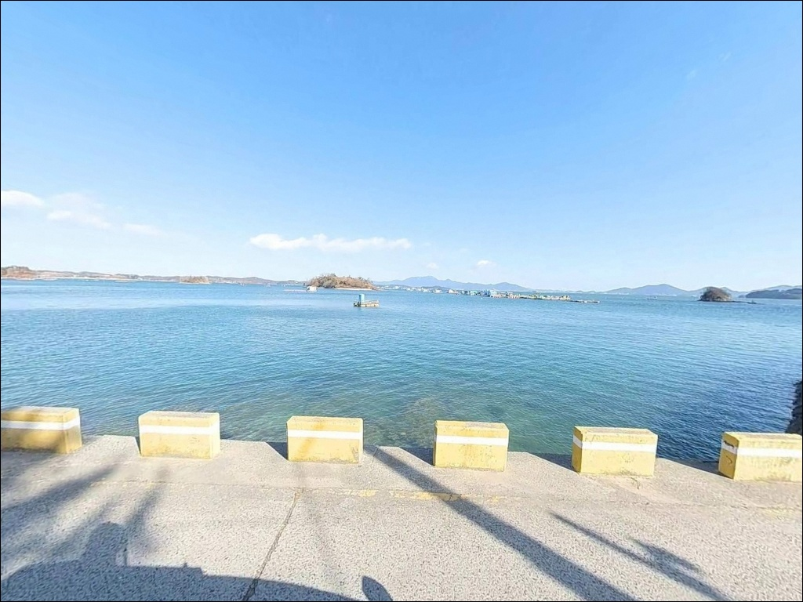
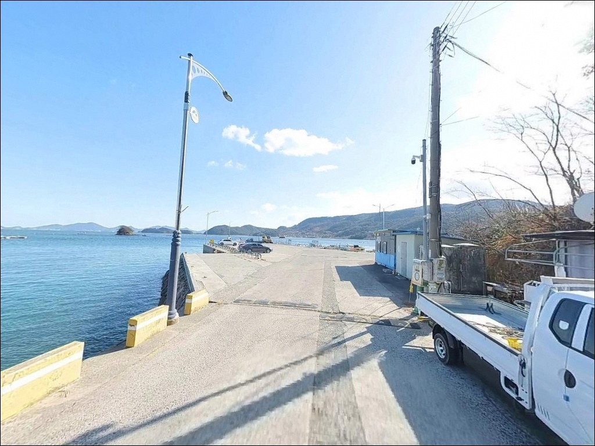
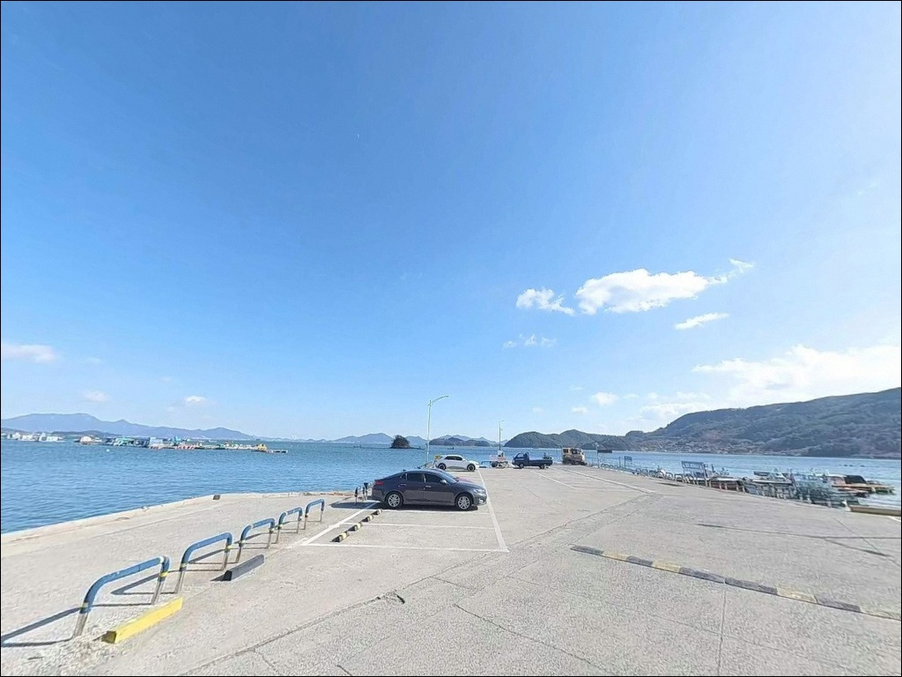
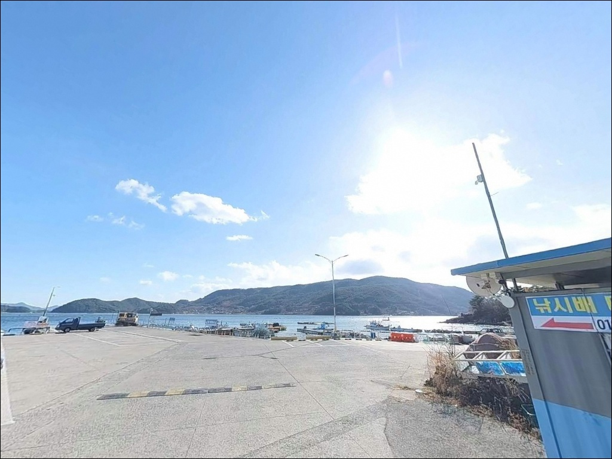
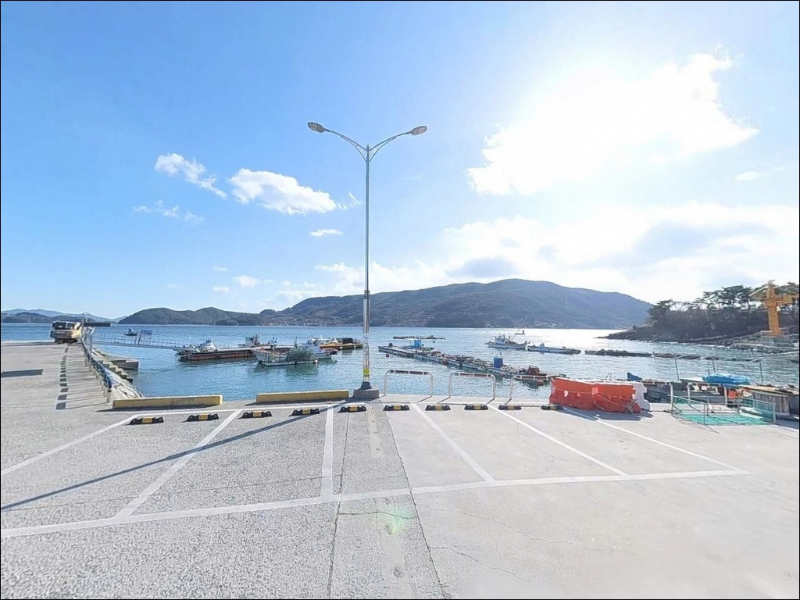
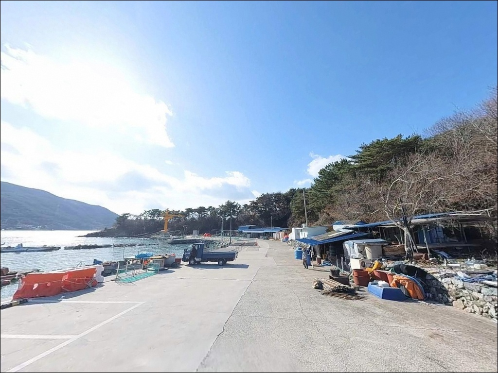
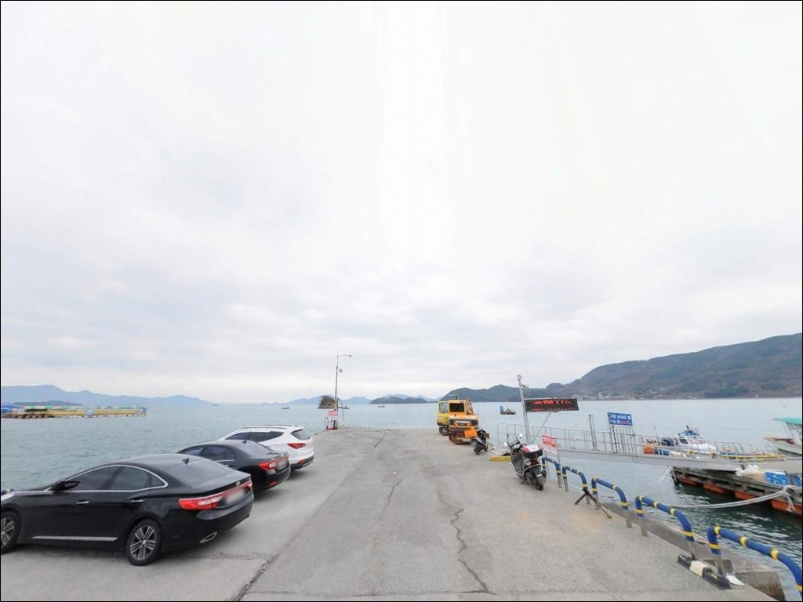

간조 때 채비 다 떠내려갈 때, 대치선착장 들물 타이밍에만 들어온 입질
이 페이지에는 광고(제휴 링크 포함)가 있으며, 광고 링크를 통해 구매하면 운영자가 판매 수익 또는 수수료를 받을 수 있습니다. 포인트 사진: 카카오맵 스카이뷰·로드뷰. 이 페이지의 지도·사진 이미지는 카카오맵의 실제 서비스 이미지와 다를 수 있습니다.


포인트 안내
대치선착장
경남 하동군 금남면 대치리 6-10
노량해협 동쪽 연안은 사리 전후
조류가 빠르게 흐르는 수로형 구조입니다.
물때를 맞추지 않으면 어떤 채비를 써도
바닥에 닿기 전에 흘러버리는 상황이 됩니다.
대치선착장은 그 해협 안쪽에 자리 잡은
어촌정주어항 지정 소형 내항으로,
방파제가 외부 파도를 막아주는 구조이지만
조류 판단은 이 포인트에서도 빠질 수 없습니다.
이 글은 대치선착장의 진입 동선,
차박 여건, 물때 기반 낚시 전략,
지형에 어울리는 낚시 방식을 중심으로 정리합니다.
특정 어종의 조황 단정이나
시설 운영 여부 확정은 이 글의 범위에 포함되지 않습니다.

1. 진입 동선과 포인트 접근성
대치리로 진입하는 도로는
금남면 해안로를 따라 이어지는 포장도로입니다.
노량대교(남해대교) 방면에서 해안 방향으로 접어들면
대치리까지 자연스럽게 연결됩니다.
진입로 포장 상태는 양호하며,
승용차는 물론 캠핑카 수준까지 진입이 가능한 도폭입니다.
마을 내부 구간 일부에서 좁아지는 지점이 있으므로
대형 카라반이나 장축 차량이라면
위성지도로 진입로 폭을 미리 확인해두는 편이 좋습니다.
선착장 앞에는 회차가 가능한
평탄한 공터가 확보되어 있으며,
차량 10대 이상 정차할 수 있는 면적입니다.
주차는 선착장 바로 앞 콘크리트 부지가 1순위이고,
마을 진입 직전 도로 갓길이 보조 후보입니다.
어선 이동 동선과 겹치지 않는 구간을
현장에서 확인한 뒤 자리를 잡는 것이 기본 매너입니다.

2. 차박 환경과 야간 체류 여건
대치선착장 앞 평탄 공간은
낚시 후 하룻밤 머무는 용도로 나쁘지 않은 구조입니다.
어촌 마을 특성상 야간 차량 통행이 적고,
민가 밀집도가 낮아
프라이버시는 상대적으로 양호한 편입니다.
가로등이 일부 설치되어 있어
완전 암흑 환경은 아니지만,
개인 조명 장비는 반드시 갖춰야 합니다.
내항 구조라 외해 파도 영향이 최소화되고
바람도 직격을 피하는 지형이지만,
기상 변화가 생기면 해협 쪽 바람이
빠르게 들어오는 경우가 있습니다.
마을 선착장 구조이므로
어선 조업 활동이 이루어지는 새벽 시간대에
엔진 소리나 작업 소음이 발생할 수 있습니다.
이른 새벽 체류 환경을 기대한다면
이 점을 미리 감안하고 방문하는 편이 좋습니다.


3. 주변 편의시설 및 인프라 현황
대치선착장 반경 3km 이내에는
편의점이나 대형 마트를 기대하기 어렵습니다.
금남면 소재지 방향으로 이동하면
편의점, 식당, 농협 하나로마트를 이용할 수 있지만,
거리가 있는 만큼
출발 전 완전 자급 준비가 기본입니다.
식수, 얼음, 낚시 소품, 연료는 모두
현장 도착 전에 갖춰두어야 합니다.
응급 상황 발생 시
하동읍 방면까지 거리가 상당하므로
비상약품과 수분 준비도
기본 출조 준비에 포함하는 것이 맞습니다.
선착장 인근에 해와달 해양낚시공원(좌대 시설)이
운영 중이며, 도선으로 연결되는 구조입니다.

4. 낚시 전 반드시 챙겨야 할 준비사항
대치선착장 방문 전에
가장 먼저 확인해야 할 것은 물때입니다.
노량해협 일대는 사리 전후 조류가 강해지는 구간으로,
조류가 세지면 어떤 채비를 써도
컨트롤이 어려워집니다.
바다타임에서 금남면 기준 물때를 확인하고
조금 전후 또는 들물 타이밍에 맞춰
출발 시각을 조율하는 것이 기본 전략입니다.
기상 변화가 해협 지형에서는 빠르게 나타날 수 있으므로
기상청 해상예보를 당일 아침 다시 한번 확인하고,
내항 구조라도 구명조끼는 반드시 착용합니다.
선착장 끝단은 이끼로 인해 미끄러울 수 있으므로
물때 변화 시 발밑 주의가 필요합니다.
어선 출입 시간대에는
접안 구역 진입을 삼가고,
야간 낚시 중 강한 조명이
민가 방향으로 향하지 않도록 주의합니다.
출조 전 "노량항 조황", "하동 금남면 낚시" 키워드로
인근 해역 최신 조황을 먼저 검색해보시기 바랍니다.

5. 지형 기반 낚시 여건 분석
대치선착장은 2002년 지정된 어촌정주어항으로,
선착장 50m, 물양장 60m, 호안 160m 규모입니다.
방파제가 외항 방향을 막아주는 내항 구조라
수면이 안정적이고 파도 영향이 최소화됩니다.
테트라포드나 대형 갯바위는 없으며,
선착장 난간과 보행로가 낚시 접근을 편하게 합니다.
수심은 선착장 끝단 기준 3~8m 수준으로 추정되며,
물양장 주변에서 수심 변화 구간이 형성됩니다.
간조 시에는 선착장 하단 일부가 드러날 정도로
조석 간만의 차가 크기 때문에
들물 타이밍을 기준으로 낚시 계획을 짜는 것이
이 포인트의 핵심입니다.
노량해협 연안부 해역 패턴을 기준으로
숭어, 도다리, 노래미, 감성돔, 갑오징어가
기대해볼 수 있는 어종입니다.
봄 도다리, 가을 갑오징어 시즌에
인근 해역 활성도가 높아지는 경향이 있습니다.
출조 전 최신 조황은 반드시 검색해서 확인하시기 바랍니다.


6. 포인트에 어울리는 낚시 스타일
이 포인트에서 가장 안정적인 방식은
원투낚시입니다.
갯벌과 사질이 혼재된 바닥 지형에서
먼 거리로 캐스팅해 바닥층을 노리는 방식이
이 선착장 구조와 잘 맞습니다.
망둥어, 보구치, 노래미를 겨냥한
바닥 공략이 기본 전략입니다.
조류가 강한 시간대에는
봉돌 무게를 높여 채비를 안정시키는 것이 중요합니다.
찌낚시도 이 포인트에 잘 어울립니다.
봄부터 가을까지 숭어 떼가 유입되는 구간이 있어
흘림찌 채비로 선착장 주변을 천천히 탐색하면
숭어 찌낚시 반응이 살아나는 시간대를
만날 수 있습니다.
들물 후반, 정조 전 타이밍을 노리는 것이
이 해역에서 효율적인 접근 방법입니다.
루어낚시는 선착장 끝단과
호안 꺾임 지점을 중심으로 운용합니다.
농어류와 볼락을 겨냥한 라이트 루어가
야간 시간대에 효과적이며,
가을 만조 전후에는
갑오징어 에깅 채비로 가벼운 공략도
가능한 구조입니다.

7. 대안 포인트와 플랜 B 동선
대치선착장의 수위가 너무 낮거나
조류가 지나치게 강해 운용이 어려울 때는
노량항이 첫 번째 대안입니다.
같은 금남면, 같은 노량해협 해역에 위치하며
국가어항 규모로 시설이 정비되어 있습니다.
대치선착장에서 약 3km 거리로
어종 패턴과 조류 타이밍을
직접 비교해볼 수 있는 포인트입니다.
남해대교를 건너면
남해군 노량리 방면에
남해충렬사 방파제가 있습니다.
동일 노량해협 남쪽 수역으로
조류 패턴이 유사하고,
테트라포드 호안을 이용한 찌낚시 포인트로
온라인 낚시 커뮤니티에서 언급되는 곳입니다.
대치선착장에서 약 4km 거리입니다.
금남면 해안선을 따라 이동하면
대도방파제와 송문리선착장도
대체 탐색 후보로 활용할 수 있습니다.
대도방파제는 원투와 루어에 적합한 구조이며,
동일 해안선의 유사한 낚시 환경을
제공하는 플랜 B 동선입니다.

물때와 들물 타이밍을 알면
대치선착장이 달리 보입니다
원투낚시나 찌낚시를 즐기는 낚시인이라면
대치선착장의 내항 구조는
안정적인 환경을 제공하는 포인트입니다.
방파제 보호를 받는 잔잔한 수면,
선착장 끝단부의 수심 변화 구간,
다양한 방식을 운용할 수 있는 평탄한 보행로가
이 포인트의 강점입니다.
다만 물때 확인 없이 찾아가거나
간조 시간대에 맞춰 도착하면
낚시 자체가 어려워지는 상황을
마주할 수 있습니다.
들물 타이밍, 자급 준비, 진입로 확인—
이 세 가지를 갖추고 간다면
조용한 하동 어촌에서 충분히 만족스러운
출조가 될 수 있는 포인트입니다.
편의시설 없는 작은 어항에서
조류 흐름 옆에 차를 대고 밤을 보내는 차박 여행자라면,
어선 작업 시간대를 피해 자리를 잡으면
낚시와 차박을 함께 즐기기 좋은
조용한 하룻밤이 될 수 있습니다.